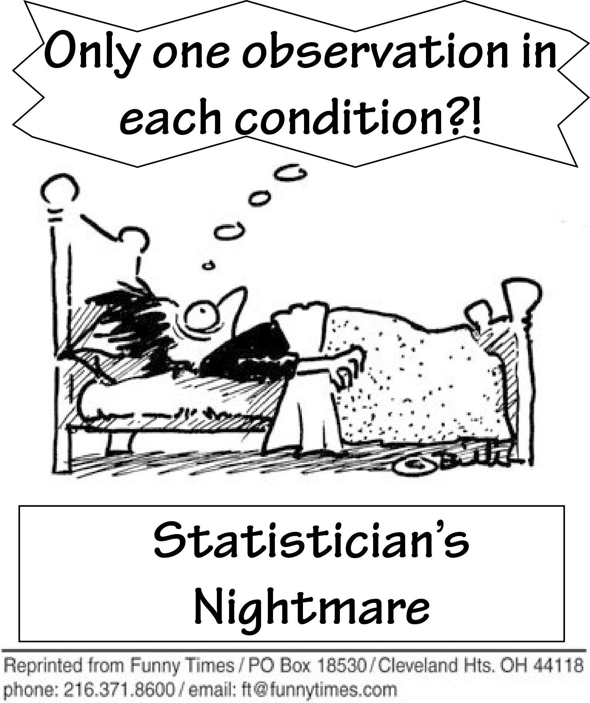
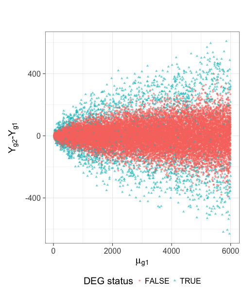
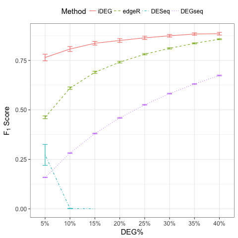

iDEG: a single-subject method for assessing gene differential expression from two transcriptomes of an individual
Qike Li
qike.li@gmail.com


Outline
- Background
- Methodology–iDEG
- Numerical studies
Background
- Precision Medicine
- Single-subject analysis
- Example RNA-Seq quantified mRNA expression data (Single-Subject)
- Main Challenges
- Our goal
- Our solution (iDEG)
Precision Medicine

Single-subject analysis
Single-subject analysis studies one patient at a time, with the purpose of revealing the patient-specific disease mechanism for highly heterogeneous diseases.
Single-subject analysis

Example RNA-Seq quantified mRNA expression data (Single-Subject)
| Gene | Case expression | Baseline expression |
|---|---|---|
| A1BG | 92 | 72 |
| A1CF | 1 | 0 |
| A2BP1 | 0 | 2 |
| A2LD1 | 127 | 71 |
| A2ML1 | 773 | 12 |
| A2M | 11825 | 29385 |
| A4GALT | 871 | 891 |
| A4GNT | 1 | 5 |
| AAA1 | 0 | 0 |
| AAAS | 414 | 460 |
| … | … | … |

Main Challenges
Main Challenges in Single-subject analysis:
- There is NO within subject replicates.

Main Challenges
Main Challenges in Single-subject analysis:
- There is NO within subject replicates.
- Different genes have different variances.
- For each gene, we have only two numbers to work with.
Our goal
- How differentially expressed is a gene?
- A meaningful effect size of differential expression
- What is the uncertainty of the measurement?
- A probability of gene differential expression.
Our solution (iDEG)
- Bypass gene-level variance estimation: Transform RNA-Seq data such that, under null hypothesis, all genes have the same variance.
- Borrow strength across genes: model all genes in a single model
Methodology–iDEG
- Data transformation
- Two-group mixture model
Data transformation

Data transformation

Data transformation
Under null hypothesis:
Two-group mixture model
Suppose \(G\) genes are measured in the RNA-Seq experiment, each of the genes is either null or differentially expressed with prior probabilities \(\pi_{0}\) or \(\pi_{1} = 1-\pi_{0}\). And the density function of \(z_{g}\) is either \(f_{0}(z)\) or \(f_{1}(z)\).
The marginal mixture density is:
Two-group mixture model
The local false positive rate, \(fdr\), is the Bayes posterior probability that a gene \(g\) is a null gene given \(z_{g}\):
Two-group mixture model
\(f_{0}\) corresponds to a empirical null distribution.
In large-scale simultaneous hypothesis testing, the theoretical null may be deficient due to various reasons:
- correlation across genes
- unobserved covariates (e.g. gender, age, smoking status, etc.)
- or failed mathematical assumptions (e.g. asymptotic approximation).
Fortunately, in large-scale simultaneous testing, the parallel structure allows the estimation of an empirical null distribution, via empirical Bayes, from the own data of the study.
Numerical studies
- Procedure
- Method evaluation
- Sensitivity Analysis
Simulate a single-subject dataset
Simulate a pair of transcriptomes:
Simulate a single-subject dataset
Procedure
- Step 1: Simulate one single-subject datasets (Poisson assumption or negative binomial assumption), which contains \(p \%\) DEG.
- Step 2: Conduct iDEG, DESeq, edgeR, and DEGseq.
- Step 3: Compute F1 score for each method,
- Step 4: Repeat Step1-Step3 for 1000 times
- Step 5: Calculate the arithmetic mean and standard deviation of the 1000 \(F_{1}\) resulted from each method.
- Step 6: Change the value of \(p\), repeat Step 1-Step 5
Method evaluation

Method evaluation
Method evaluation
| DEG.. | Method | Precision | Recall.TPR | FPR | F1 | Predictions |
|---|---|---|---|---|---|---|
| 5% | iDEG | 0.93 (1.6e-02) | 0.679 (2.5e-02) | 0.003 (7.2e-04) | 0.784 (1.5e-02) | 730.482 (3.4e+01) |
| edgeR | 0.39 (8.4e-03) | 0.948 (7.1e-03) | 0.078 (2.8e-03) | 0.552 (8.6e-03) | 2432.95 (5.4e+01) | |
| DESeq | 1 (1.3e-03) | 0.202 (3.5e-02) | 0 (1.4e-05) | 0.334 (4.8e-02) | 201.589 (3.5e+01) | |
| 10% | iDEG | 0.946 (9.8e-03) | 0.734 (2.1e-02) | 0.005 (9.8e-04) | 0.827 (1.2e-02) | 1552.089 (5.5e+01) |
| edgeR | 0.527 (7.7e-03) | 0.956 (4.7e-03) | 0.095 (2.9e-03) | 0.68 (6.6e-03) | 3628.589 (5.4e+01) | |
| DESeq | 1 (0.0e+00) | 0.001 (1.0e-03) | 0 (0.0e+00) | 0.003 (2.3e-03) | 1.107 (2.0e+00) | |
| 15% | iDEG | 0.955 (7.1e-03) | 0.767 (1.6e-02) | 0.006 (1.1e-03) | 0.851 (8.9e-03) | 2409.492 (6.4e+01) |
| edgeR | 0.608 (6.8e-03) | 0.96 (3.6e-03) | 0.109 (3.1e-03) | 0.745 (5.2e-03) | 4735.157 (5.5e+01) | |
| DESeq | 1 (0.0e+00) | 0 (4.8e-05) | 0 (0.0e+00) | 0.001 (1.1e-04) | 0.02 (1.4e-01) | |
| 20% | iDEG | 0.961 (5.8e-03) | 0.787 (1.4e-02) | 0.008 (1.3e-03) | 0.865 (7.5e-03) | 3275.416 (7.3e+01) |
| edgeR | 0.666 (5.7e-03) | 0.964 (3.0e-03) | 0.121 (3.1e-03) | 0.788 (4.1e-03) | 5791.611 (5.2e+01) | |
| DESeq | 1 (0.0e+00) | 0 (7.9e-06) | 0 (0.0e+00) | 0 (0.0e+00) | 0.001 (3.2e-02) |
Although the Recall/TPR and number of precisions of iDEG are lower than edgeR, iDEG has high precision and low FPR across all percentages of DEG. These operating characteristics of iDEG may be preferable in large-scale inference, like RNA-Seq analysis, where investigators examines tens of thousands of genes in a high-throughput manner.
Sensitivity Analysis
Our experience indicates that without making assumptions on RNA-Seq data, it is difficult to construct suitable statistical inferences for a single-subject dataset. Nonetheless we test the two main assumptions we make:
- The value of dispersion parameter is a function of expression mean.
- The majority of the genes are null genes.
Sensitivity Analysis
- Draw dispersion parameter \(\delta_{g}\) from a uniform distribution \(\text{unif}(0.001, 0.1)\).

Sensitivity Analysis
- Simulate single-subject datasets with a series of percentages of DEG.

Take home message
We developed a new and effective method to identify differentially expressed genes from two transcriptomes of a single patient.
Acknowledgements

Helen Hao Zhang

Yves A. Lussier
- Haiquan Li
- Haiquan LiJoanne Berghout
- Grant Schissler
- Yuan Shang
 spa
spa